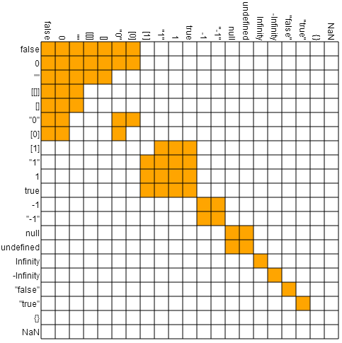

<!doctype html>
<html lang="en">

  <head>
    <meta charset="utf-8">

    <title>Lua for Javascripters</title>

    <meta name="description" content="Let's present Lua for people who already know some javascript">
    <meta name="author" content="Enrique García Cota">

    <meta name="apple-mobile-web-app-capable" content="yes" />
    <meta name="apple-mobile-web-app-status-bar-style" content="black-translucent" />

    <meta name="viewport" content="width=device-width, initial-scale=1.0, maximum-scale=1.0, user-scalable=no, minimal-ui">

    <link rel="stylesheet" href="css/reveal.css">
    <link rel="stylesheet" href="css/theme/kikito.css" id="theme">

    <!-- Code syntax highlighting -->
    <link rel="stylesheet" href="lib/css/vs.css">


    <!-- Printing and PDF exports -->
    <script>
      var link = document.createElement( 'link' );
      link.rel = 'stylesheet';
      link.type = 'text/css';
      link.href = window.location.search.match( /print-pdf/gi ) ? 'css/print/pdf.css' : 'css/print/paper.css';
      document.getElementsByTagName( 'head' )[0].appendChild( link );
    </script>

    <!--[if lt IE 9]>
    <script src="lib/js/html5shiv.js"></script>
    <![endif]-->
  </head>

  <body>

    <div class="reveal">

      <!-- Any section element inside of this container is displayed as a slide -->
      <div class="slides">

        <section data-markdown data-separator="\*\*\*">
          <script type="text/template">

<!-- .slide: data-background="./img/front-bg.png" -->
# Lua
### for
## `{Javascripters};`

<div class="subtitle">
<p>[Enrique García](http://kiki.to) ([@otikik](http://twitter.com/otikik)). CartoDB - Jul '15</p>
</div>

***

https://kikito.github.io/lua-for-javascripters

***

<!-- .slide: data-background="#008AB8" -->

## 1. Intro
## 2. Syntax
## 3. Conclusion

***

<!-- .slide: data-background="./img/yoga.jpg" -->

# 1.
# Intro

***

## General purpose vs Embedded

***

<!-- .slide: data-background="./img/car.jpg" -->

***

<!-- .slide: data-background="./img/nuts-and-bolts.jpg" -->

***

<!-- .slide: data-background="./img/robots.jpg" -->

***

<!-- .slide: data-background="./img/driver.jpg" -->

***

## Javascript

### Browser: Embedded
### Node: General-purpose language

***

## Lua
### Embedded
### Hosts: C/C++ apps & microcontrollers

***

<figure class="stretch valign">
  
</figure>

***

<figure class="stretch valign">
  
</figure>

***

<figure class="stretch valign">
  
</figure>

***

<figure class="stretch valign">
  
</figure>

***

<!-- .slide: data-background="./img/robots.jpg" -->

***

## Javascript:

* First version developed in 2 weeks
* Browser-tied

***

## Backwards-compatibility

***

<figure class="stretch valign">
  
</figure>

***

## Lua:

* First version worse than first javascript version
* No Backwards-compatibility expectations

***

## Javascript Implementations

* Google V8
* SpiderMonkey
* ...

***

## ECMAScript versions

* ECS5
* ECS6

http://kangax.github.io/compat-table/

***

## Lua Implementations


***

## Lua Versions


5.1 - 5.3  /  2.0.4

***


<!-- .slide: data-background="./img/hands.jpg" -->

# 2.
# Syntax

***

## Literals

***

```javascript
// javascript
var name = 'Peter';
var age  = 35;

console.log(name + " is " + age + ' years old');

var doc = "A line " +
          "another line";
```

***

```lua
-- lua
local name = 'Peter'
local age  = 35

print(("%s is %d years old"):format(name, age))

local doc = [[ A line
  another line
]]
```

***

Js comments:

```javascript
// a single-line comment in js

/*
  a multi-line comment in js
*/
```

Lua comments:

```lua
-- a single-line comment in Lua

--[[
  a multi-line comment in Lua
]]
```

***

## Truthyness

***

### Javascript:

* `false`
* `0` (zero)
* `""` (empty string)
* `null`
* `undefined`
* `NaN`

***

### Lua:

* `false`
* `nil`

***

## Data structures

***

```javascript
// javascript
var o = {a: 1, b: 2};
console.log(o["b"]);    // 2
console.log(o.b);       // Also 2
console.log(typeof(o)); // object

var a = [1,2,3,4];
console.log(a[0]); // 1
console.log(typeof(a)); // object
```

***

```lua
-- lua
local h = {a = 1, b = 2}
print(h['b'])  -- 2
print(h.b)     -- also 2
print(type(b)) -- 'table'

local a = {1,2,3,4}
print(a[1]) -- 1
print(type(a)) -- 'table'
```

***
```lua
-- lua
local a = {'a', 'b', 'c', 'd'}
for i=1, #a do
  print(a[i])
end
```
***

## Lua tables:

* Arrays
* Structs
* Objects
* Maps & Sets
* ...

***

## Lua tables:

* Arrays
* Structs
* Objects
* Maps & Sets ⇐
* ...

***

```lua
-- lua
local peter = {name = 'peter'}
local t = {}
t[peter] = true

if t[peter] then
  print('t works like a set')
end
```

***
```javascript
// ECS6
let peter = {name: 'peter'};
let s = new Set();
s.add(peter);

if(s.has(peter)){
  console.log('s is a set');
}
```
***

## Functions

***

```javascript
// javascript
function sum(a,b) {
  return a + b;
}

console.log(typeof(sum)); // 'function'
console.log(typeof(typeof)); // error

```
***

```lua
-- lua
function sum(a+b)
  return a + b
end

print(type(sum))   -- 'function'
print(type(type))  -- 'function'
print(type(print)) -- 'function'
```

***

```javascript
// javascript
var sum = function(a,b) {
  return a + b;
};
```

***

```lua
-- lua
local sum = function(a+b)
  return a + b
end
```

***

```lua
-- lua
local decompose = function(tweet)
  return tweet.author, tweet.text
end

local author, text = decompose(t)
```

***

```lua
-- lua
local a = 1
local b = 2

a,b = b,a
```

***
```javascript
// ECS6
let decompose = function(tweet) {
  return [tweet.author, tweet.text];
};

let [author, text] = decompose(tweet);
```

***
```javascript
// ECS6
let a = 1
let b = 2
[a,b] = [b,a]
```
***

```javascript
// ECS6
let tweet = {author: 'peter', text: 'hello'};

let {author: a, text: t} = tweet;

console.log(a); // peter
console.log(t); // hello
```

***

```lua
-- lua
local tweet = {author = 'peter', text = 'hello'}

local a,t = tweet.author, tweet.text

print(a) -- peter
print(t) -- hello
```

***

## Learn Lua in 15 minutes

#### http://tylerneylon.com/a/learn-lua/

| | |
|-|-|
|nil|metatables|
|class-like|inheritance|
|modules|
***

<!-- .slide: data-background="./img/amish.jpg" -->

# 3. Conclusion

***

<figure class="stretch valign">
  
</figure>

***

<figure class="stretch valign">
  
</figure>

***

> You can not remove the bad parts

***

> You can not remove the outdated parts

***

## C++

#### http://blog.codinghorror.com/falling-into-the-pit-of-success/

***

## V8 Javascript Engine
``` no-highlight
1107 unique files
.cpp 432804 loc
.h   147794 loc
```

## LuaJIT
``` no-highlight
190 unique files
.c    42985 loc
.h    16702 loc
```

***

> LuaJIT **interpreter** (!) beats V8's JIT **compiler** in 6 benchmarks out of 8.

http://lua-users.org/lists/lua-l/2010-03/msg00305.html

          </script>
        </section>
        <section>
          <iframe width="420" height="315" class='stretch' src="https://www.youtube.com/embed/-jvLY5pUwic" frameborder="0" allowfullscreen></iframe>
        </section>

      </div>

    </div>

    <script src="lib/js/head.min.js"></script>
    <script src="js/reveal.js"></script>

    <script>

      // Full list of configuration options available at:
      // https://github.com/hakimel/reveal.js#configuration
      Reveal.initialize({
        controls: true,
        progress: true,
        history: true,

        width: 960,
        height: 700,

        margin: 0.1,

        // Bounds for smallest/largest possible scale to apply to content
        minScale: 0.2,
        maxScale: 1,

        center: true,

        theme: 'kikito',
        transition: 'fade', // default/cube/page/concave/zoom/linear/fade/none
        transitionSpeed: 'fast',

        // Optional reveal.js plugins
        dependencies: [
          { src: 'lib/js/classList.js', condition: function() { return !document.body.classList; } },
          { src: 'plugin/markdown/marked.js', condition: function() { return !!document.querySelector( '[data-markdown]' ); } },
          { src: 'plugin/markdown/markdown.js', condition: function() { return !!document.querySelector( '[data-markdown]' ); } },
          { src: 'plugin/highlight/highlight.js', async: true, condition: function() { return true; }, callback: function() { hljs.initHighlightingOnLoad(); } },
          { src: 'plugin/zoom-js/zoom.js', async: true },
          { src: 'plugin/notes/notes.js', async: true }
        ]
      });

    </script>

  </body>
</html>
